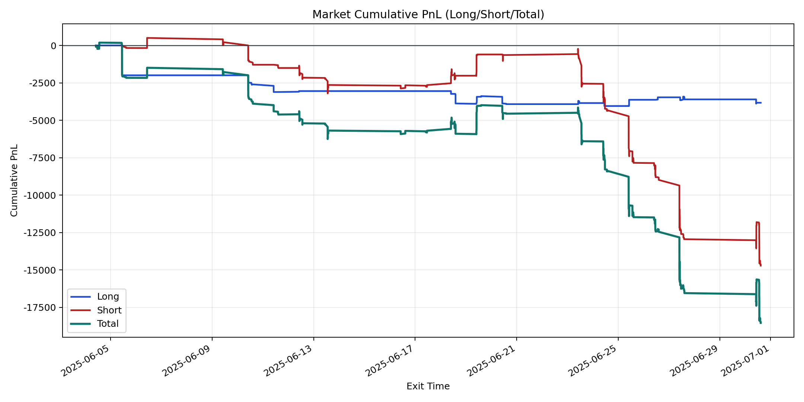
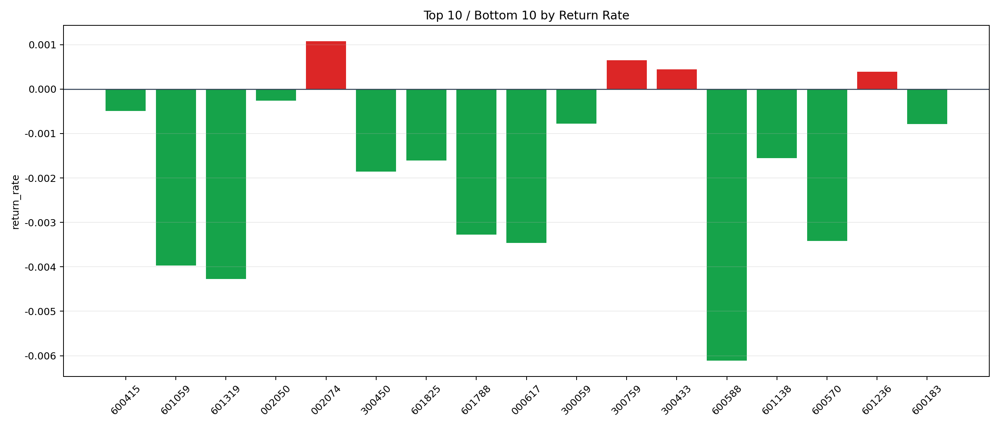

| repo_root | /home/haoranyou/data/output/dynamic_AUM_TAKER_index300 |
|---|---|
| period_months | 1 |
| period_label | 2025-06-04_to_2025-06-30 |
| start_time | 2025-06-04 10:07:27 |
| end_time | 2025-06-30 14:44:27 |
| n_trades | 829 |
| n_symbols | 17 |
| total_pnl | -18533.95605000004 |
| long_total_pnl | -3827.8418999998985 |
| short_total_pnl | -14706.114150000145 |
| total_entry_notional | 14374234.0 |
| long_entry_notional | 2463811.9999999995 |
| short_entry_notional | 11910422.0 |
| total_return_rate | -0.0012893873892688848 |
| long_return_rate | -0.0015536258042415166 |
| short_return_rate | -0.0012347265403358627 |
| top_symbols_by_return | ["002074", "300759", "300433", "601236", "002050", "600415", "300059", "600183", "601138", "601825"] |
| bottom_symbols_by_return | ["600588", "601319", "601059", "000617", "600570", "601788", "300450", "601825", "601138", "600183"] |

